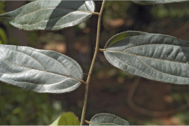
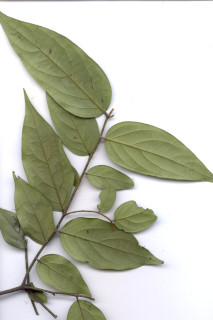
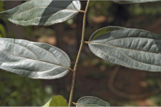
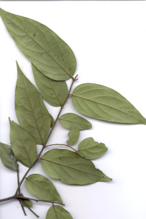
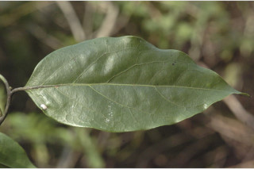
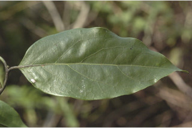

Trees up to 25 m high.
25 ಮೀ. ಎತ್ತರದವರೆಗೆ ಬೆಳೆಯುವ ಮರಗಳು.
25 മീറ്റര് വരെ ഉയരത്തില് വളരുന്ന മരങ്ങള്.
மரம், 25 மீ. உயரம் வரை வளரக்கூடியது
Bark blackish, smooth; blaze brown.
ತೊಗಟೆ ನಯವಾಗಿದ್ದು ಕಪ್ಪು ಬಣ್ಣ ಹೊಂದಿರುತ್ತದೆ; ಕಚ್ಚು ಮಾಡಿದ ಜಾಗ ಕಂದು ಬಣ್ಣದಲ್ಲಿರುತ್ತದೆ.
കറുത്തതും, മിനുസമാര്ന്നതുമായ പുറംതൊലി; വെട്ട്പാടിന് തവിട്ട് നിറം.
மரத்தின் பட்டை கருப்பு நிறமுடையது, வழுவழுப்பானது; உள்பட்டை அரக்கு நிறமுடையது.
Branchlets terete, hirsute when young.
ಕಿರುಕೊಂಬೆಗಳು ದುಂಡಾಗಿರುತ್ತವೆ, ಎಳೆಯದಾಗಿದ್ದಾಗ ಒರಟು ರೋಮಗಳಿಂದ ಕೂಡಿರುತ್ತವೆ.
ഉരുണ്ട ഉപശാഖകള്, ഇളതായിരിക്കുമ്പോള് കനത്ത രോമാവൃതമാണ്.
சிறிய நுனிக்கிளைகள் குறுக்குவெட்டுத் தோற்றத்தில் வளையமானது, புதிய கிளைகளில் உரோமங்களை கொண்டது.
Leaves simple, alternate distichous; petiole 0.3-1.1 cm long, terete; lamina 5.5-13.5 x 3-6 cm, elliptic to ovate-lanceolate, apex narrowly acuminate with blunt tip, base acute to slightly attenuate, coriaceous when mature; midrib raised above; secondary_nerves 3-6 pairs, sometimes lowermost pairs opposite and acute in angle; tertiary_nerves nearly percurrent.
ಎಲೆಗಳು ಸರಳವಾಗಿದ್ದು ಪರ್ಯಾಯ ಹಾಗೂ ಸುತ್ತು ಜೋಡನಾ ವ್ಯವಸ್ಥೆ ಯಲ್ಲಿದ್ದು ಕಾಂಡದ ಎರಡೂ ಕಡೆಯ ಎದುರು ಬದರಿನ ಸಾಲಿನಲ್ಲಿರುತ್ತವೆ;ಎಲೆ ತೊಟ್ಟುಗಳು 0.3-1.1 ಸೆಂ.ಮೀ ಉದ್ದವಿದ್ದು ದುಂಡಾಗಿರುತ್ತವೆ; ಪತ್ರಗಳು 5.5 – 13.5 X 3 – 6 ಸೆಂ.ಮೀ. ಗಾತ್ರ, ಅಂಡವೃತ್ತದಿಂದ ಅಂಡ- ಭರ್ಜಿಯವರೆಗಿನ ಆಕಾರ,ಸಂಕುಚಿತ ಮೊಂಡಾದ ಅಗ್ರವುಳ್ಳ ಕ್ರಮೇಣ ಚೂಪಾಗುವ ತುದಿ ; ಚೂಪಾದುದರಿಂದ ಹಿಡಿದು ಒಳಬಾಗಿದ ಬುಡ ಹೊಂದಿದ್ದು ಬಲಿತಾಗ ತೊಗಲನ್ನೋಲುವ ಮೇಲ್ಮೈ ಹೊಂದಿರುತ್ತವೆ; ಮೇಲ್ಭಾಗದಲ್ಲಿ ಮಧ್ಯನಾಳ ಉಬ್ಬಿರುತ್ತದೆ;ಎರಡನೇ ದರ್ಜೆಯ ನಾಳಗಳು 3-6 ಜೋಡಿಗಳಿದ್ದು, ಕೆಲವು ವೇಳೆ ತೀರಾ ತಳದಲ್ಲಿನ ಜೋಡಿಗಳು ಅಭಿಮುಖವಾಗಿದ್ದು ತೀಕ್ಷ್ಣವಾದ ಕೋನ ಹೊಂದಿರುತ್ತವೆ; ಮೂರನೇ ದರ್ಜೆಯ ನಾಳಗಳು ಹೆಚ್ಚೂ ಕಡಿಮೆ ಎಲೆ ದಿಂಡಿಗೆ ಅಡ್ಡವಾಗಿ ಕೂಡುವಂತವು.
ലഘുവായ ഇലകള്, ഏകാന്തരമായി, തണ്ടിന്റെ രണ്ടുഭാഗത്ത് മാത്രമായടുക്കിയ വിധത്തില്; ഉരുണ്ട ഇലഞെട്ടിന് 0.3 സെ.മീ മുതല് 1.1 സെ.മീ വരെ നീളം; പത്രഫലകത്തിന് 5.5. സെ.മീ മുതല് 13.5 സെ.മീ വരെ നീളവും 3 സെ.മീ മുതല് 6 സെ.മീ വരെ വീതിയും, ദീര്ഘവൃത്താകാരംതൊട്ട് അണ്ഡാകാര-കുന്താകൃതിയോ ആണ്, മുനപ്പില്ലാത്ത അറ്റത്തോടുകൂടിയ, നേര്ത്ത ദീര്ഘാഗ്രം, പത്രാധാരം നിശിതം തൊട്ട് ചെറുതായി നേര്ത്തവസാനിക്കുന്നതോ ആണ്, മൂക്കുമ്പോള് ചര്മ്മില പ്രകൃതം, മുഖ്യസിര മുകളില് ഉയര്ന്നതാണ്; 3 മുതല് 6 വരെ ജോഡി ദ്വിതീയ ഞരമ്പുകള്, ചിലപ്പോള് ഏറ്റവും താഴത്തെ ജോഡികള്, സമ്മുഖവും, നിശിതകോണിലുമാണ്; ത്രിതീയ ഞരമ്പുകള് ഏതാണ്ട് പെര്കറന്റ് ആണ്.
இலைகள் தனித்தவை, மாற்றுஅடுக்கமானவை, இருநெடுக்கு வரிசையிலையடுக்கம் (டைஸ்டிக்கஸ்); இலைக்காம்பு 0.3-1.1 செ.மீ. நீளமானது, வளையமானது. இலை அலகு 5.5-13.5 X 3-6 செ.மீ., நீள்வட்டம் முதல் முட்டை வடிவம் - ஈட்டி வடிவமுடையது, அலகின் நுனி குறுகி வால் போன்று நீண்டு மழுங்கிய நுனி, அலகின் தளம் கூரியது முதல் சிறிதளவு அட்டனுவேட், முதிர்ந்த இலைகள் கோரியேசியஸ், மையநரம்பு மேற்பரப்பில் அலகின் பரப்பைவிட மேலேழும்பியது; இரண்டாம் நிலை நரம்புகள் 3-6 ஜோடிகள், சிலவற்றில் தளப்பகுதி ஜோடி நரம்புகள் எதிரானவை மற்றும் குறுகிய கோணமுடையது; மூன்றாம் நிலை நரம்புகள் கிட்டதட்ட பெர்க்கரண்ட் அமைப்பு கொண்டது.
Flowers unisexual; male flowers in axillary cymes, brown tomentose.
ಹೂಗಳು ಏಕ ಲಿಂಗಿಗಳು; ಗಂಡು ಹೂಗಳು ಅಕ್ಷಾಕಂಕುಳಿನಲ್ಲಿನ ಮಧ್ಯಾರಂಭಿ ಪುಷ್ಪಮಂಜರಿಯಲ್ಲಿದ್ದು ಕಂದು ಬಣ್ಣದ ದಟ್ಟ ಮೃದು ತುಪ್ಪಳದಿಂದ ಕೂಡಿರುತ್ತವೆ.
പൂക്കള് ഏകലിംഗികളാണ്; കനത്ത തവിട്ട് രോമാവൃതമായ ആണ്പൂക്കള് കക്ഷീയ സൈമുകളിലുണ്ടാകുന്നു.
ஓர்பால் மலர்கள்; ஆண்மலர்கள் இலைக்கோணங்களில் காணப்படும் சைம், அரக்குநிற மென்உரோமங்களுடையது.
Berry, globose, glabrous, 2.5 cm across; seeds 1-4, wedge shaped.
ಬೆರ್ರಿಗಳು 2.5 ಸೆಂ.ಮೀ.ವರೆಗಿನ ವ್ಯಾಸ ಹೊಂದಿದ್ದು ಗೋಳಾಕಾರದಲ್ಲಿರುತ್ತವೆ; ಬೀಜಗಳು ಬೆಣೆಯಾಕಾರದಲ್ಲಿದ್ದು 1 ರಿಂದ 4 ರ ಸಂಖ್ಯೆಯಲ್ಲಿರುತ್ತವೆ.
ആപ്പാകാരത്തിലുളള 1 മുതല് 4 വരെ വിത്തുകളുളള കായ, 2.5 സെ. മീ കുറുകേയുളള, അരോമിലമായ, ഗോളാകാര ബെറിയാണ്.
முழுச்சதைகனி (பெர்ரி), உருண்டையானது, உரோமங்களற்றது; 2.5 செ.மீ. குறுக்களவுடையது; விதைகள் 1-4, ஆப்பு வடிவமுடையது.


 



 
